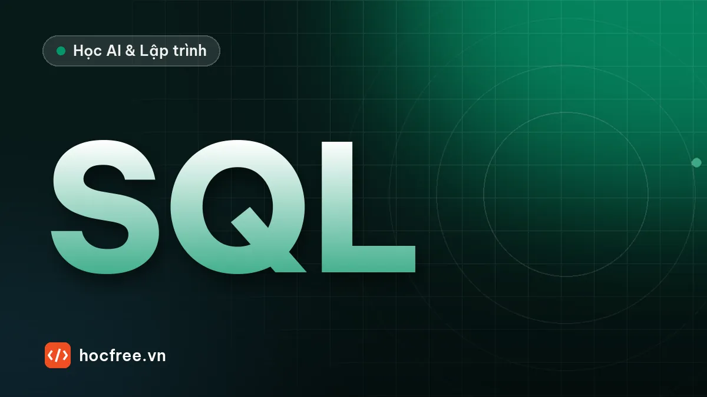

SQL cơ bản với Python sqlite3: bảng, JOIN, GROUP BY, an toàn
Học SQL ngay trong Python với sqlite3: CREATE TABLE, INSERT, SELECT, JOIN, GROUP BY, tham số chống SQL injection và transaction.

Học xong bài này, bạn sẽ
- Tạo bảng, khóa chính, khóa ngoại
- Viết SELECT, WHERE, ORDER BY, JOIN, GROUP BY
- Dùng tham số ? để chống SQL injection và transaction
Nên học trước: Dự án chặng 7: báo cáo tỷ giá tự động ra Excel
Nội dung bài viết
File JSON ổn với vài trăm bản ghi. Khi dữ liệu lên hàng trăm nghìn dòng, nhiều người cùng ghi, cần tìm "khách nào mua nhiều nhất tháng này" trong tích tắc, bạn cần cơ sở dữ liệu quan hệ và ngôn ngữ truy vấn SQL. SQL là kỹ năng bắt buộc của mọi backend developer. Bài này học SQL ngay trong Python với sqlite3: có sẵn, không cần cài máy chủ, toàn bộ CSDL nằm trong một file.
1. Kết nối và tạo bảng
import sqlite3
conn = sqlite3.connect("cua_hang.db") # tạo file nếu chưa có; ":memory:" để thử trong RAM
conn.execute("PRAGMA foreign_keys = ON") # SQLite cần bật kiểm tra khóa ngoại cho mỗi kết nối
conn.executescript("""
DROP TABLE IF EXISTS don_hang;
DROP TABLE IF EXISTS khach_hang;
CREATE TABLE khach_hang (
id INTEGER PRIMARY KEY, -- tự tăng
ho_ten TEXT NOT NULL,
email TEXT UNIQUE,
thanh_pho TEXT
);
CREATE TABLE don_hang (
id INTEGER PRIMARY KEY,
khach_id INTEGER NOT NULL REFERENCES khach_hang(id),
ngay TEXT NOT NULL, -- lưu ngày dạng ISO 'YYYY-MM-DD'
tong INTEGER NOT NULL CHECK (tong >= 0)
);
""")
print([r[0] for r in conn.execute("SELECT name FROM sqlite_master WHERE type = 'table'")])['khach_hang', 'don_hang']- Một bảng giống một sheet Excel có cột cố định kiểu dữ liệu; mỗi dòng là một bản ghi.
PRIMARY KEY: khóa chính, định danh duy nhất mỗi dòng.INTEGER PRIMARY KEYtrong SQLite tự tăng.REFERENCES khach_hang(id): khóa ngoại, mỗi đơn hàng phải thuộc một khách có thật.NOT NULL,UNIQUE,CHECK: ràng buộc để CSDL tự từ chối dữ liệu sai, kể cả khi code của bạn có lỗi.
Thay vì lưu tên khách lặp lại trong mỗi đơn hàng, ta tách hai bảng và nối bằng khach_id. Sửa email khách chỉ phải sửa một chỗ. Đây là ý tưởng cốt lõi của CSDL quan hệ (gọi là chuẩn hóa).
2. Chèn dữ liệu với tham số ?
import sqlite3
conn = sqlite3.connect("cua_hang.db")
conn.execute("PRAGMA foreign_keys = ON")
khach = [("Nguyễn An", "an@x.vn", "Hà Nội"), ("Trần Bình", "binh@x.vn", "TP.HCM"),
("Lê Chi", "chi@x.vn", "Hà Nội"), ("Phạm Dũng", None, "Đà Nẵng")]
don = [(1, "2026-10-01", 450_000), (1, "2026-10-15", 1_200_000), (2, "2026-10-03", 300_000),
(3, "2026-09-28", 850_000), (3, "2026-10-20", 150_000), (2, "2026-10-25", 2_100_000)]
with conn: # transaction: tự commit nếu thành công
conn.executemany("INSERT INTO khach_hang (ho_ten, email, thanh_pho) VALUES (?, ?, ?)", khach)
conn.executemany("INSERT INTO don_hang (khach_id, ngay, tong) VALUES (?, ?, ?)", don)
print(conn.execute("SELECT COUNT(*) FROM don_hang").fetchone()[0])6f"SELECT * FROM khach_hang WHERE email = '{email}'" với email do người dùng nhập là lỗ hổng SQL injection: nhập ' OR '1'='1 là lấy được toàn bộ bảng, nhập khéo hơn có thể xóa dữ liệu. Luôn dùng dấu ? và truyền giá trị riêng: thư viện tự xử lý an toàn mọi ký tự đặc biệt.3. SELECT: lấy dữ liệu
import sqlite3
conn = sqlite3.connect("cua_hang.db")
conn.row_factory = sqlite3.Row # truy cập cột theo tên: dong["ho_ten"]
sql = """
SELECT ho_ten, thanh_pho
FROM khach_hang
WHERE thanh_pho = ? AND email IS NOT NULL
ORDER BY ho_ten
"""
for dong in conn.execute(sql, ("Hà Nội",)): # tham số luôn là tuple, chú ý dấu phẩy
print(dong["ho_ten"], "-", dong["thanh_pho"])
print(conn.execute("SELECT ho_ten FROM khach_hang WHERE ho_ten LIKE ?", ("%n%",)).fetchall()[0][0])
print(conn.execute("SELECT MAX(tong), MIN(ngay) FROM don_hang").fetchone()[:])Lê Chi - Hà Nội
Nguyễn An - Hà Nội
Nguyễn An
(2100000, '2026-09-28')Thứ tự viết một câu SELECT: SELECT cột → FROM bảng → WHERE điều kiện lọc dòng → GROUP BY → HAVING → ORDER BY → LIMIT. LIKE '%n%' tìm chuỗi chứa "n"; IS NULL/IS NOT NULL kiểm tra giá trị rỗng (không dùng = NULL). Lấy kết quả bằng fetchone() (một dòng), fetchall() (mọi dòng) hoặc duyệt thẳng bằng for.
4. JOIN và GROUP BY
import sqlite3
conn = sqlite3.connect("cua_hang.db")
sql = """
SELECT k.ho_ten,
COUNT(d.id) AS so_don,
COALESCE(SUM(d.tong), 0) AS tong_chi
FROM khach_hang AS k
LEFT JOIN don_hang AS d ON d.khach_id = k.id AND d.ngay >= ?
GROUP BY k.id
ORDER BY tong_chi DESC
"""
for ho_ten, so_don, tong_chi in conn.execute(sql, ("2026-10-01",)):
print(f"{ho_ten:<10} {so_don} đơn {tong_chi:>12,}đ")Trần Bình 2 đơn 2,400,000đ
Nguyễn An 2 đơn 1,650,000đ
Lê Chi 1 đơn 150,000đ
Phạm Dũng 0 đơn 0đJOIN ... ONghép dòng của hai bảng theo điều kiện.INNER JOIN(hayJOIN) chỉ giữ dòng khớp ở cả hai bên;LEFT JOINgiữ mọi dòng bảng trái, kể cả khách chưa có đơn (Phạm Dũng).GROUP BYgom dòng theo nhóm, dùng kèm hàm tổng hợpCOUNT,SUM,AVG,MIN,MAX. Lọc trên kết quả tổng hợp thì dùngHAVING(ví dụHAVING tong_chi > 1000000), không dùngWHERE.COALESCE(x, 0)đổiNULLthành 0. Điều kiện ngày đặt trongONchứ không ởWHERE, để khách không có đơn tháng 10 vẫn hiện với 0 đơn.
5. UPDATE, DELETE và transaction
import sqlite3
conn = sqlite3.connect("cua_hang.db")
conn.execute("PRAGMA foreign_keys = ON")
def them_don(conn, khach_id: int, ngay: str, cac_mon: list[int]) -> int:
"""Thêm đơn và trừ điểm thưởng: cả hai thành công, hoặc không gì cả."""
with conn: # lỗi giữa chừng → tự rollback
cur = conn.execute("INSERT INTO don_hang (khach_id, ngay, tong) VALUES (?, ?, ?)",
(khach_id, ngay, sum(cac_mon)))
if any(gia < 0 for gia in cac_mon):
raise ValueError("Giá món không hợp lệ")
return cur.lastrowid
print("Đơn mới:", them_don(conn, 4, "2026-10-29", [120_000, 80_000]))
for khach_id, mon in [(4, [100_000, -5]), (99, [50_000])]:
try:
them_don(conn, khach_id, "2026-10-29", mon)
except (ValueError, sqlite3.IntegrityError) as loi:
print("Hủy:", loi)
with conn:
n = conn.execute("UPDATE khach_hang SET email = ? WHERE id = ?", ("dung@x.vn", 4)).rowcount
print(n, conn.execute("SELECT COUNT(*) FROM don_hang WHERE khach_id = 4").fetchone()[0])Đơn mới: 7
Hủy: Giá món không hợp lệ
Hủy: FOREIGN KEY constraint failed
1 1Transaction gom nhiều lệnh thành một khối "tất cả hoặc không gì cả". with conn: tự commit khi khối chạy xong, tự rollback khi có ngoại lệ: đơn thứ hai đã được INSERT nhưng bị hủy hoàn toàn khi phát hiện giá âm, nên khách 4 chỉ có đúng một đơn. Khóa ngoại chặn đơn của khách 99 không tồn tại. Quên commit là lỗi kinh điển: dữ liệu "biến mất" khi đóng chương trình.
Tóm tắt
sqlite3.connect,CREATE TABLEvới khóa chính, khóa ngoại, ràng buộc; bậtPRAGMA foreign_keys.- Luôn dùng tham số
?; không ghép chuỗi vào SQL. SELECT ... WHERE ... GROUP BY ... HAVING ... ORDER BY ... LIMIT;JOIN,LEFT JOIN.with conn:là transaction: commit khi xong, rollback khi lỗi;row_factory = sqlite3.Row.
Bài tập
Bài 1. Top 3 khách hàng
Với CSDL ở trên, viết một câu SQL lấy 3 khách chi nhiều nhất (mọi thời gian), kèm số đơn và giá trị đơn trung bình (làm tròn).
Xem đáp án
import sqlite3
conn = sqlite3.connect("cua_hang.db")
sql = """
SELECT k.ho_ten, COUNT(*) AS so_don, SUM(d.tong) AS tong_chi, ROUND(AVG(d.tong)) AS tb
FROM don_hang AS d
JOIN khach_hang AS k ON k.id = d.khach_id
GROUP BY k.id
ORDER BY tong_chi DESC
LIMIT 3
"""
for dong in conn.execute(sql):
print(dong)('Trần Bình', 2, 2400000, 1200000.0)
('Nguyễn An', 2, 1650000, 825000.0)
('Lê Chi', 2, 1000000, 500000.0)Ở đây dùng JOIN thường vì chỉ quan tâm khách đã có đơn. Phạm Dũng có 200.000đ từ đơn ở mục 5 nên xếp thứ 4.
Bài 2. Doanh thu theo tháng
Viết câu SQL tính doanh thu và số đơn theo từng tháng, sắp tăng dần theo tháng. Gợi ý: substr(ngay, 1, 7) lấy 'YYYY-MM'.
Xem đáp án
import sqlite3
conn = sqlite3.connect("cua_hang.db")
sql = """
SELECT substr(ngay, 1, 7) AS thang, COUNT(*) AS so_don, SUM(tong) AS doanh_thu
FROM don_hang
GROUP BY thang
ORDER BY thang
"""
for thang, so_don, doanh_thu in conn.execute(sql):
print(f"{thang}: {so_don} đơn, {doanh_thu:,}đ")2026-09: 1 đơn, 850,000đ
2026-10: 6 đơn, 4,400,000đLưu ngày dạng ISO YYYY-MM-DD giúp cắt chuỗi, so sánh và sắp xếp đều đúng. Nếu lưu 29/10/2026, sắp xếp theo chuỗi sẽ sai ngay.
Nguồn tham khảo: sqlite3: DB-API 2.0 interface for SQLite databases; SQLite: SQL As Understood By SQLite; SQLite Foreign Key Support; OWASP: SQL Injection.
Bài tập thực hành
- Tạo CSDL cửa hàng gồm bảng khach_hang và don_hang, chèn dữ liệu mẫu, tìm 3 khách chi nhiều nhất.
- Viết hàm them_don(conn, ...) dùng transaction: lỗi giữa chừng thì không ghi gì.
Làm xong bài tập mới chuyển sang bài tiếp theo: tự viết code là cách duy nhất để nhớ lâu.